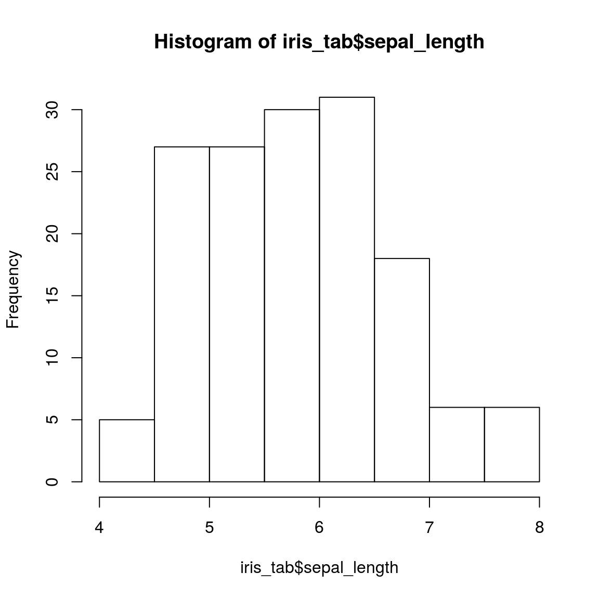
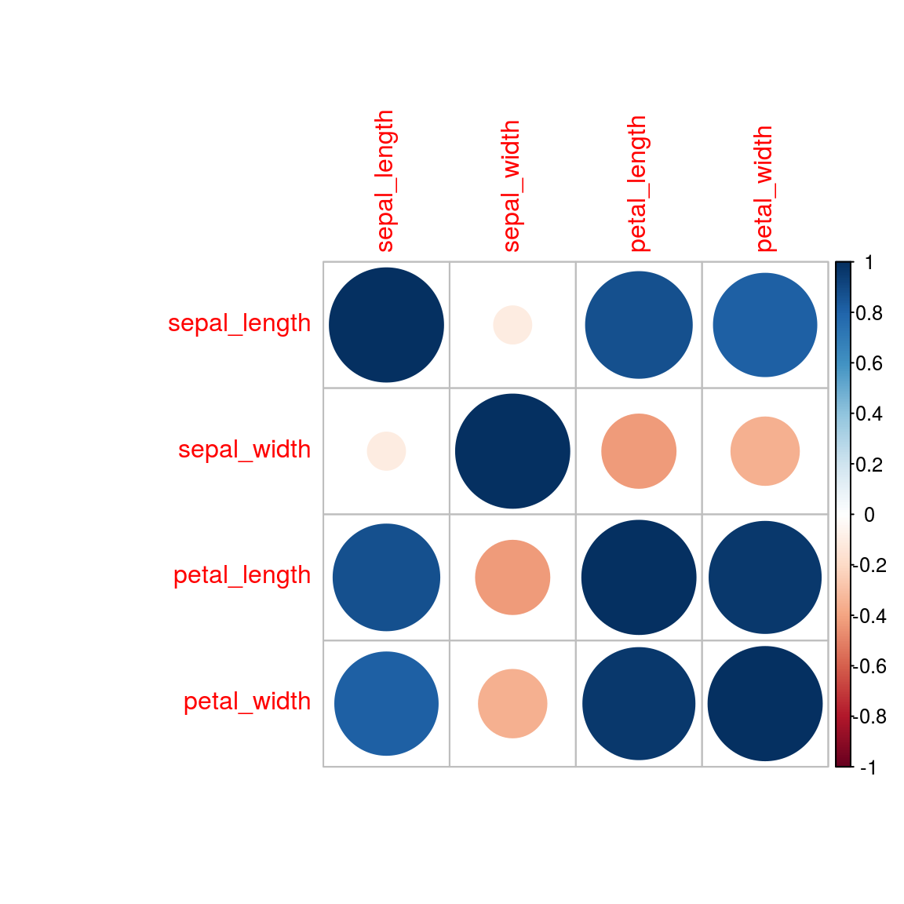
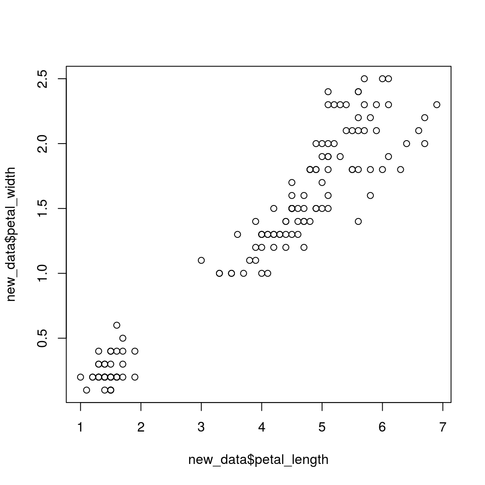
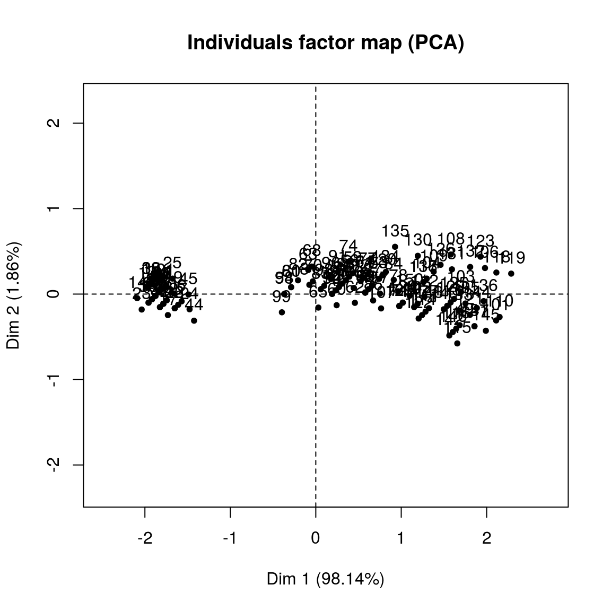
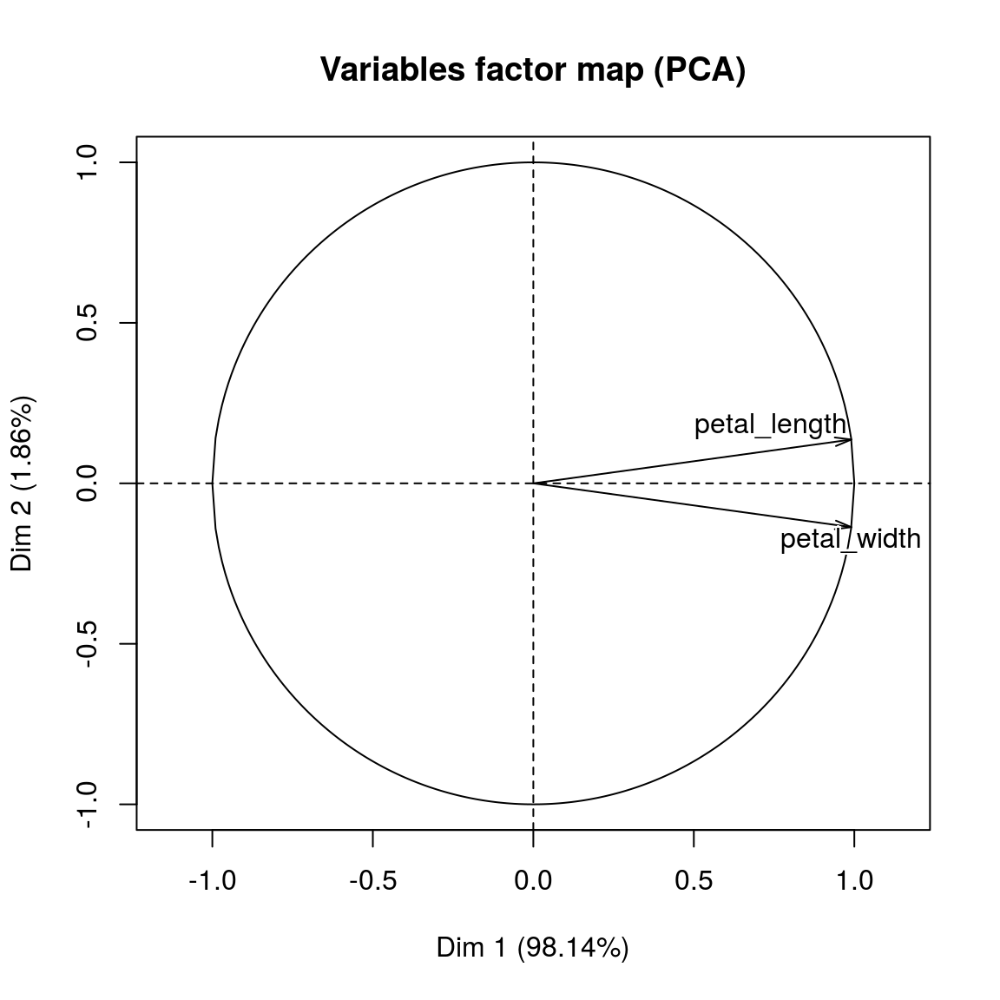
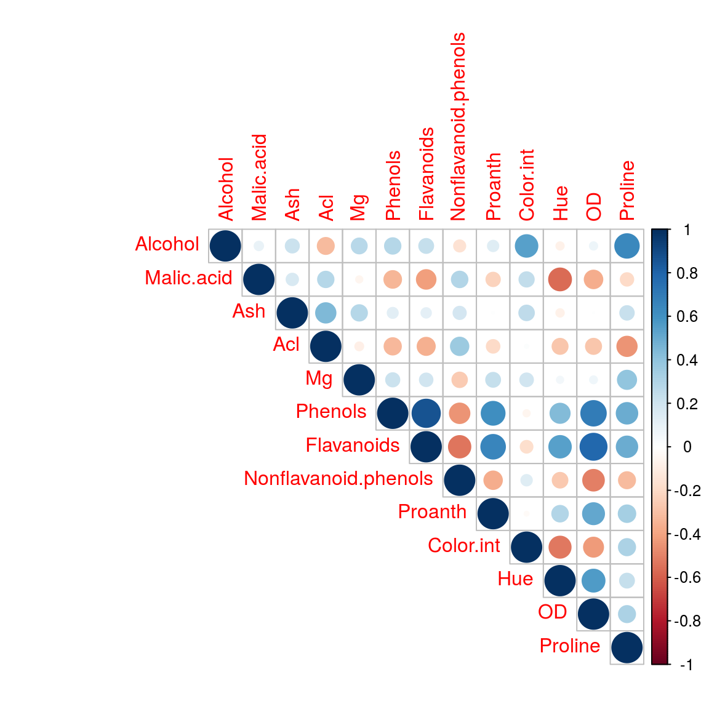
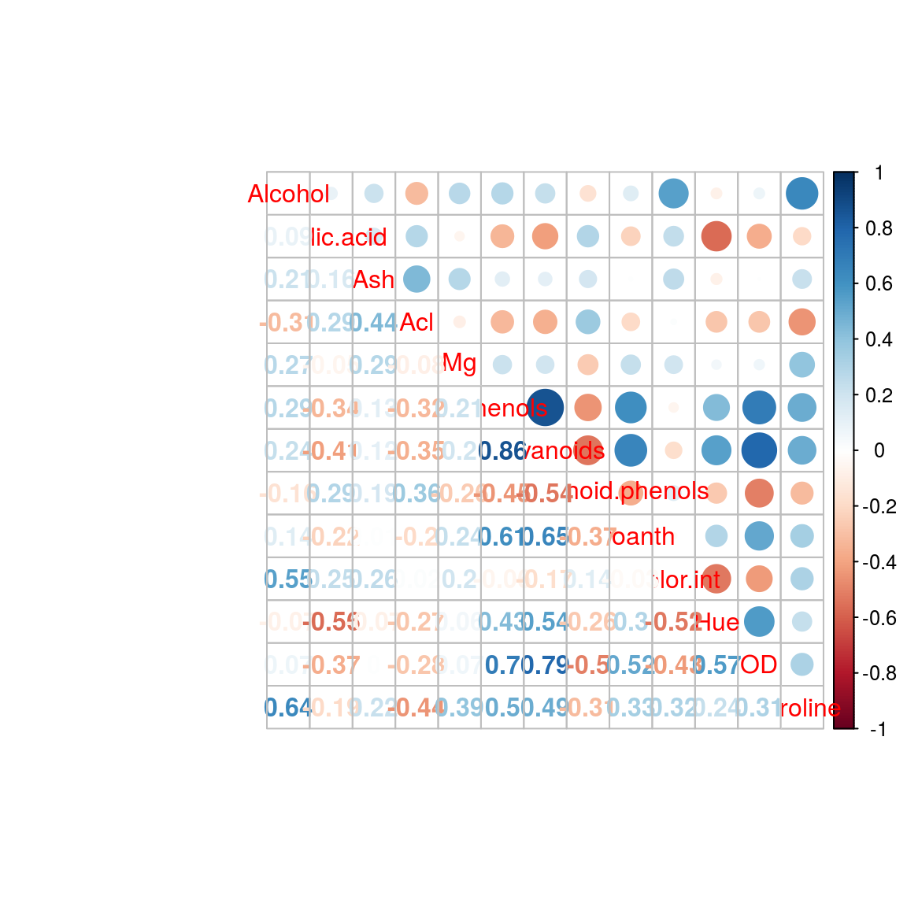
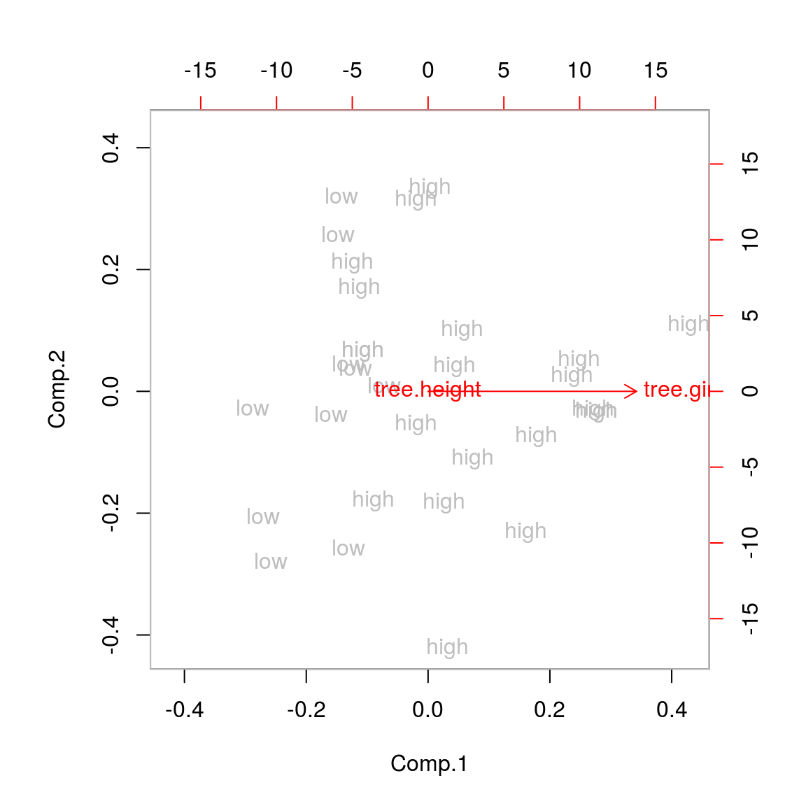
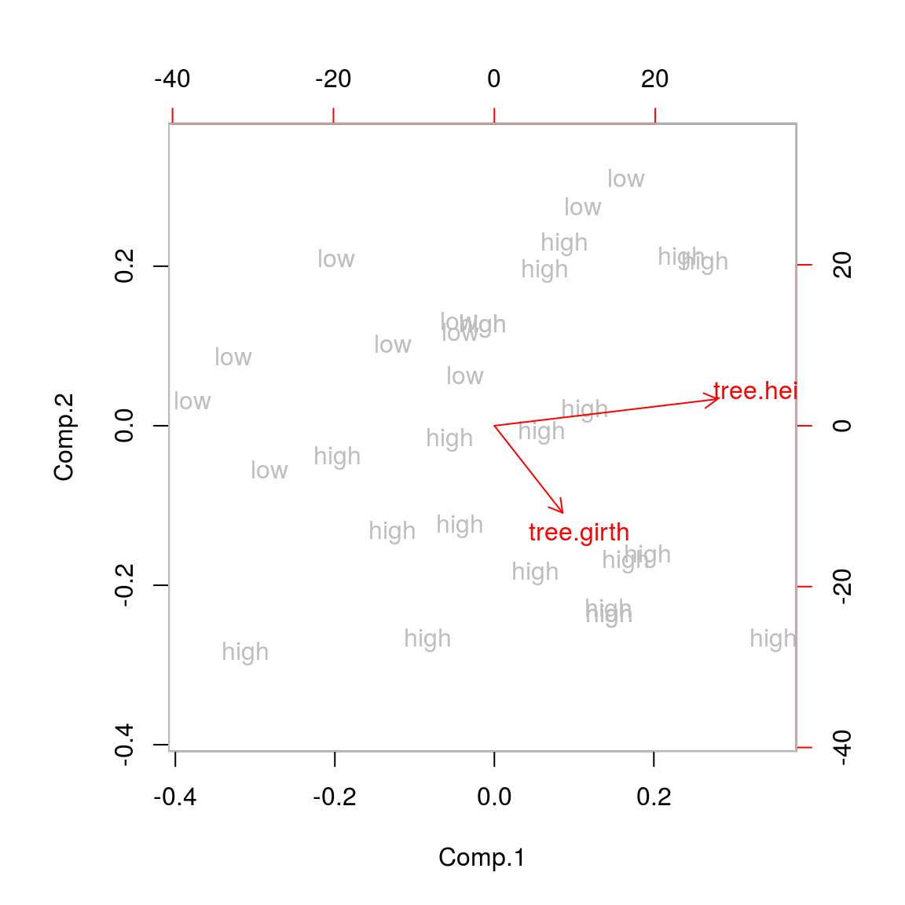

14 PCA
PCA reduces the dimensionality of a multivariate data to two or three principal components, that can be visualized graphically, with minimal loss of information.
PCA is veru useful whne the varianle with the data set are highly correlated. Correlation indicates that there is redundancy in the data. Due to this redundancy, PCA can be used to reduce the original variable into smaller number of new variabeles, nameing principal components.
14.1 Read data
iris_tab <- read.csv("https://gist.githubusercontent.com/curran/a08a1080b88344b0c8a7/raw/d546eaee765268bf2f487608c537c05e22e4b221/iris.csv")14.2 Head data
head(iris_tab)## sepal_length sepal_width petal_length petal_width species
## 1 5.1 3.5 1.4 0.2 setosa
## 2 4.9 3.0 1.4 0.2 setosa
## 3 4.7 3.2 1.3 0.2 setosa
## 4 4.6 3.1 1.5 0.2 setosa
## 5 5.0 3.6 1.4 0.2 setosa
## 6 5.4 3.9 1.7 0.4 setosa14.3 Summary of the data
summary(iris_tab)## sepal_length sepal_width petal_length petal_width
## Min. :4.300 Min. :2.000 Min. :1.000 Min. :0.100
## 1st Qu.:5.100 1st Qu.:2.800 1st Qu.:1.600 1st Qu.:0.300
## Median :5.800 Median :3.000 Median :4.350 Median :1.300
## Mean :5.843 Mean :3.054 Mean :3.759 Mean :1.199
## 3rd Qu.:6.400 3rd Qu.:3.300 3rd Qu.:5.100 3rd Qu.:1.800
## Max. :7.900 Max. :4.400 Max. :6.900 Max. :2.500
## species
## setosa :50
## versicolor:50
## virginica :50
##
##
## 14.4 Check the distribution of the data
hist(iris_tab$sepal_length)
14.5 Eigendecomposition - Computing Eigenvectors and Eigenvalues
In linear algebra, an eigenvector is a non-zero vector that changes by only a scalar factor when that linear transformation is applied to it.
The eigenvectors and eigenvalues of a covariance (or correlation) matrix represent the “core” of a PCA: The eigenvectors (principal components) determine the directions of the new feature space, and the eigenvalues determine their magnitude. In other words, the eigenvalues explain the variance of the data along the new feature axes.
14.5.1 Covariance Matrix
The classic approach to PCA is to perform the eigendecomposition on the covariance matrix \(\Sigma\), which is a \(d \times d\) matrix where each element represents the covariance between two features. The covariance between two features is calculated as follows:
\(\sigma_{jk} = \frac{1}{n-1}\sum_{i=1}^{N}\left( x_{ij}-\bar{x}_j \right) \left( x_{ik}-\bar{x}_k \right).\)
We can summarize the calculation of the covariance matrix via the following matrix equation:
\(\Sigma = \frac{1}{n-1} \left( (\mathbf{X} - \mathbf{\bar{x}})^T\;(\mathbf{X} - \mathbf{\bar{x}}) \right)\)
where \(\mathbf{\bar{x}}\) is the mean vector
\(\mathbf{\bar{x}} = \sum\limits_{i=1}^n x_{i}.\)
The mean vector is a \(d\)-dimensional vector where each value in this vector represents the sample mean of a feature column in the dataset.
cov_mat<-cor(iris_tab[,1:4])
cov_mat## sepal_length sepal_width petal_length petal_width
## sepal_length 1.0000000 -0.1093692 0.8717542 0.8179536
## sepal_width -0.1093692 1.0000000 -0.4205161 -0.3565441
## petal_length 0.8717542 -0.4205161 1.0000000 0.9627571
## petal_width 0.8179536 -0.3565441 0.9627571 1.0000000#install.packages("corrplot")
library(corrplot)
corrplot(cov_mat)
14.6 PCA with two variables
new_data = as.data.frame(cbind(petal_length = iris_tab$petal_length, petal_width = iris_tab$petal_width))
head(new_data)## petal_length petal_width
## 1 1.4 0.2
## 2 1.4 0.2
## 3 1.3 0.2
## 4 1.5 0.2
## 5 1.4 0.2
## 6 1.7 0.4plot(new_data$petal_length, new_data$petal_width)
#install.packages("FactoMineR")
library("FactoMineR")
pc_2var_res = PCA(new_data)
print(pc_2var_res)## **Results for the Principal Component Analysis (PCA)**
## The analysis was performed on 150 individuals, described by 2 variables
## *The results are available in the following objects:
##
## name description
## 1 "$eig" "eigenvalues"
## 2 "$var" "results for the variables"
## 3 "$var$coord" "coord. for the variables"
## 4 "$var$cor" "correlations variables - dimensions"
## 5 "$var$cos2" "cos2 for the variables"
## 6 "$var$contrib" "contributions of the variables"
## 7 "$ind" "results for the individuals"
## 8 "$ind$coord" "coord. for the individuals"
## 9 "$ind$cos2" "cos2 for the individuals"
## 10 "$ind$contrib" "contributions of the individuals"
## 11 "$call" "summary statistics"
## 12 "$call$centre" "mean of the variables"
## 13 "$call$ecart.type" "standard error of the variables"
## 14 "$call$row.w" "weights for the individuals"
## 15 "$call$col.w" "weights for the variables"#install.packages("FactoInvestigate")
#library(FactoInvestigate)
#Investigate(pc_2var_res, document = "pdf_document")Next, we perform an eigendecomposition on the covariance matrix:
eigen(cov_mat)## eigen() decomposition
## $values
## [1] 2.91081808 0.92122093 0.14735328 0.02060771
##
## $vectors
## [,1] [,2] [,3] [,4]
## [1,] 0.5223716 -0.37231836 0.7210168 0.2619956
## [2,] -0.2633549 -0.92555649 -0.2420329 -0.1241348
## [3,] 0.5812540 -0.02109478 -0.1408923 -0.8011543
## [4,] 0.5656110 -0.06541577 -0.6338014 0.523546314.7 PCA on wine data
14.7.1 Read the wine data
wine <- read.csv("data/wine.csv", header=T)
knitr::kable(wine)| Wine | Alcohol | Malic.acid | Ash | Acl | Mg | Phenols | Flavanoids | Nonflavanoid.phenols | Proanth | Color.int | Hue | OD | Proline |
|---|---|---|---|---|---|---|---|---|---|---|---|---|---|
| 1 | 14.23 | 1.71 | 2.43 | 15.6 | 127 | 2.80 | 3.06 | 0.28 | 2.29 | 5.640000 | 1.040 | 3.92 | 1065 |
| 1 | 13.20 | 1.78 | 2.14 | 11.2 | 100 | 2.65 | 2.76 | 0.26 | 1.28 | 4.380000 | 1.050 | 3.40 | 1050 |
| 1 | 13.16 | 2.36 | 2.67 | 18.6 | 101 | 2.80 | 3.24 | 0.30 | 2.81 | 5.680000 | 1.030 | 3.17 | 1185 |
| 1 | 14.37 | 1.95 | 2.50 | 16.8 | 113 | 3.85 | 3.49 | 0.24 | 2.18 | 7.800000 | 0.860 | 3.45 | 1480 |
| 1 | 13.24 | 2.59 | 2.87 | 21.0 | 118 | 2.80 | 2.69 | 0.39 | 1.82 | 4.320000 | 1.040 | 2.93 | 735 |
| 1 | 14.20 | 1.76 | 2.45 | 15.2 | 112 | 3.27 | 3.39 | 0.34 | 1.97 | 6.750000 | 1.050 | 2.85 | 1450 |
| 1 | 14.39 | 1.87 | 2.45 | 14.6 | 96 | 2.50 | 2.52 | 0.30 | 1.98 | 5.250000 | 1.020 | 3.58 | 1290 |
| 1 | 14.06 | 2.15 | 2.61 | 17.6 | 121 | 2.60 | 2.51 | 0.31 | 1.25 | 5.050000 | 1.060 | 3.58 | 1295 |
| 1 | 14.83 | 1.64 | 2.17 | 14.0 | 97 | 2.80 | 2.98 | 0.29 | 1.98 | 5.200000 | 1.080 | 2.85 | 1045 |
| 1 | 13.86 | 1.35 | 2.27 | 16.0 | 98 | 2.98 | 3.15 | 0.22 | 1.85 | 7.220000 | 1.010 | 3.55 | 1045 |
| 1 | 14.10 | 2.16 | 2.30 | 18.0 | 105 | 2.95 | 3.32 | 0.22 | 2.38 | 5.750000 | 1.250 | 3.17 | 1510 |
| 1 | 14.12 | 1.48 | 2.32 | 16.8 | 95 | 2.20 | 2.43 | 0.26 | 1.57 | 5.000000 | 1.170 | 2.82 | 1280 |
| 1 | 13.75 | 1.73 | 2.41 | 16.0 | 89 | 2.60 | 2.76 | 0.29 | 1.81 | 5.600000 | 1.150 | 2.90 | 1320 |
| 1 | 14.75 | 1.73 | 2.39 | 11.4 | 91 | 3.10 | 3.69 | 0.43 | 2.81 | 5.400000 | 1.250 | 2.73 | 1150 |
| 1 | 14.38 | 1.87 | 2.38 | 12.0 | 102 | 3.30 | 3.64 | 0.29 | 2.96 | 7.500000 | 1.200 | 3.00 | 1547 |
| 1 | 13.63 | 1.81 | 2.70 | 17.2 | 112 | 2.85 | 2.91 | 0.30 | 1.46 | 7.300000 | 1.280 | 2.88 | 1310 |
| 1 | 14.30 | 1.92 | 2.72 | 20.0 | 120 | 2.80 | 3.14 | 0.33 | 1.97 | 6.200000 | 1.070 | 2.65 | 1280 |
| 1 | 13.83 | 1.57 | 2.62 | 20.0 | 115 | 2.95 | 3.40 | 0.40 | 1.72 | 6.600000 | 1.130 | 2.57 | 1130 |
| 1 | 14.19 | 1.59 | 2.48 | 16.5 | 108 | 3.30 | 3.93 | 0.32 | 1.86 | 8.700000 | 1.230 | 2.82 | 1680 |
| 1 | 13.64 | 3.10 | 2.56 | 15.2 | 116 | 2.70 | 3.03 | 0.17 | 1.66 | 5.100000 | 0.960 | 3.36 | 845 |
| 1 | 14.06 | 1.63 | 2.28 | 16.0 | 126 | 3.00 | 3.17 | 0.24 | 2.10 | 5.650000 | 1.090 | 3.71 | 780 |
| 1 | 12.93 | 3.80 | 2.65 | 18.6 | 102 | 2.41 | 2.41 | 0.25 | 1.98 | 4.500000 | 1.030 | 3.52 | 770 |
| 1 | 13.71 | 1.86 | 2.36 | 16.6 | 101 | 2.61 | 2.88 | 0.27 | 1.69 | 3.800000 | 1.110 | 4.00 | 1035 |
| 1 | 12.85 | 1.60 | 2.52 | 17.8 | 95 | 2.48 | 2.37 | 0.26 | 1.46 | 3.930000 | 1.090 | 3.63 | 1015 |
| 1 | 13.50 | 1.81 | 2.61 | 20.0 | 96 | 2.53 | 2.61 | 0.28 | 1.66 | 3.520000 | 1.120 | 3.82 | 845 |
| 1 | 13.05 | 2.05 | 3.22 | 25.0 | 124 | 2.63 | 2.68 | 0.47 | 1.92 | 3.580000 | 1.130 | 3.20 | 830 |
| 1 | 13.39 | 1.77 | 2.62 | 16.1 | 93 | 2.85 | 2.94 | 0.34 | 1.45 | 4.800000 | 0.920 | 3.22 | 1195 |
| 1 | 13.30 | 1.72 | 2.14 | 17.0 | 94 | 2.40 | 2.19 | 0.27 | 1.35 | 3.950000 | 1.020 | 2.77 | 1285 |
| 1 | 13.87 | 1.90 | 2.80 | 19.4 | 107 | 2.95 | 2.97 | 0.37 | 1.76 | 4.500000 | 1.250 | 3.40 | 915 |
| 1 | 14.02 | 1.68 | 2.21 | 16.0 | 96 | 2.65 | 2.33 | 0.26 | 1.98 | 4.700000 | 1.040 | 3.59 | 1035 |
| 1 | 13.73 | 1.50 | 2.70 | 22.5 | 101 | 3.00 | 3.25 | 0.29 | 2.38 | 5.700000 | 1.190 | 2.71 | 1285 |
| 1 | 13.58 | 1.66 | 2.36 | 19.1 | 106 | 2.86 | 3.19 | 0.22 | 1.95 | 6.900000 | 1.090 | 2.88 | 1515 |
| 1 | 13.68 | 1.83 | 2.36 | 17.2 | 104 | 2.42 | 2.69 | 0.42 | 1.97 | 3.840000 | 1.230 | 2.87 | 990 |
| 1 | 13.76 | 1.53 | 2.70 | 19.5 | 132 | 2.95 | 2.74 | 0.50 | 1.35 | 5.400000 | 1.250 | 3.00 | 1235 |
| 1 | 13.51 | 1.80 | 2.65 | 19.0 | 110 | 2.35 | 2.53 | 0.29 | 1.54 | 4.200000 | 1.100 | 2.87 | 1095 |
| 1 | 13.48 | 1.81 | 2.41 | 20.5 | 100 | 2.70 | 2.98 | 0.26 | 1.86 | 5.100000 | 1.040 | 3.47 | 920 |
| 1 | 13.28 | 1.64 | 2.84 | 15.5 | 110 | 2.60 | 2.68 | 0.34 | 1.36 | 4.600000 | 1.090 | 2.78 | 880 |
| 1 | 13.05 | 1.65 | 2.55 | 18.0 | 98 | 2.45 | 2.43 | 0.29 | 1.44 | 4.250000 | 1.120 | 2.51 | 1105 |
| 1 | 13.07 | 1.50 | 2.10 | 15.5 | 98 | 2.40 | 2.64 | 0.28 | 1.37 | 3.700000 | 1.180 | 2.69 | 1020 |
| 1 | 14.22 | 3.99 | 2.51 | 13.2 | 128 | 3.00 | 3.04 | 0.20 | 2.08 | 5.100000 | 0.890 | 3.53 | 760 |
| 1 | 13.56 | 1.71 | 2.31 | 16.2 | 117 | 3.15 | 3.29 | 0.34 | 2.34 | 6.130000 | 0.950 | 3.38 | 795 |
| 1 | 13.41 | 3.84 | 2.12 | 18.8 | 90 | 2.45 | 2.68 | 0.27 | 1.48 | 4.280000 | 0.910 | 3.00 | 1035 |
| 1 | 13.88 | 1.89 | 2.59 | 15.0 | 101 | 3.25 | 3.56 | 0.17 | 1.70 | 5.430000 | 0.880 | 3.56 | 1095 |
| 1 | 13.24 | 3.98 | 2.29 | 17.5 | 103 | 2.64 | 2.63 | 0.32 | 1.66 | 4.360000 | 0.820 | 3.00 | 680 |
| 1 | 13.05 | 1.77 | 2.10 | 17.0 | 107 | 3.00 | 3.00 | 0.28 | 2.03 | 5.040000 | 0.880 | 3.35 | 885 |
| 1 | 14.21 | 4.04 | 2.44 | 18.9 | 111 | 2.85 | 2.65 | 0.30 | 1.25 | 5.240000 | 0.870 | 3.33 | 1080 |
| 1 | 14.38 | 3.59 | 2.28 | 16.0 | 102 | 3.25 | 3.17 | 0.27 | 2.19 | 4.900000 | 1.040 | 3.44 | 1065 |
| 1 | 13.90 | 1.68 | 2.12 | 16.0 | 101 | 3.10 | 3.39 | 0.21 | 2.14 | 6.100000 | 0.910 | 3.33 | 985 |
| 1 | 14.10 | 2.02 | 2.40 | 18.8 | 103 | 2.75 | 2.92 | 0.32 | 2.38 | 6.200000 | 1.070 | 2.75 | 1060 |
| 1 | 13.94 | 1.73 | 2.27 | 17.4 | 108 | 2.88 | 3.54 | 0.32 | 2.08 | 8.900000 | 1.120 | 3.10 | 1260 |
| 1 | 13.05 | 1.73 | 2.04 | 12.4 | 92 | 2.72 | 3.27 | 0.17 | 2.91 | 7.200000 | 1.120 | 2.91 | 1150 |
| 1 | 13.83 | 1.65 | 2.60 | 17.2 | 94 | 2.45 | 2.99 | 0.22 | 2.29 | 5.600000 | 1.240 | 3.37 | 1265 |
| 1 | 13.82 | 1.75 | 2.42 | 14.0 | 111 | 3.88 | 3.74 | 0.32 | 1.87 | 7.050000 | 1.010 | 3.26 | 1190 |
| 1 | 13.77 | 1.90 | 2.68 | 17.1 | 115 | 3.00 | 2.79 | 0.39 | 1.68 | 6.300000 | 1.130 | 2.93 | 1375 |
| 1 | 13.74 | 1.67 | 2.25 | 16.4 | 118 | 2.60 | 2.90 | 0.21 | 1.62 | 5.850000 | 0.920 | 3.20 | 1060 |
| 1 | 13.56 | 1.73 | 2.46 | 20.5 | 116 | 2.96 | 2.78 | 0.20 | 2.45 | 6.250000 | 0.980 | 3.03 | 1120 |
| 1 | 14.22 | 1.70 | 2.30 | 16.3 | 118 | 3.20 | 3.00 | 0.26 | 2.03 | 6.380000 | 0.940 | 3.31 | 970 |
| 1 | 13.29 | 1.97 | 2.68 | 16.8 | 102 | 3.00 | 3.23 | 0.31 | 1.66 | 6.000000 | 1.070 | 2.84 | 1270 |
| 1 | 13.72 | 1.43 | 2.50 | 16.7 | 108 | 3.40 | 3.67 | 0.19 | 2.04 | 6.800000 | 0.890 | 2.87 | 1285 |
| 2 | 12.37 | 0.94 | 1.36 | 10.6 | 88 | 1.98 | 0.57 | 0.28 | 0.42 | 1.950000 | 1.050 | 1.82 | 520 |
| 2 | 12.33 | 1.10 | 2.28 | 16.0 | 101 | 2.05 | 1.09 | 0.63 | 0.41 | 3.270000 | 1.250 | 1.67 | 680 |
| 2 | 12.64 | 1.36 | 2.02 | 16.8 | 100 | 2.02 | 1.41 | 0.53 | 0.62 | 5.750000 | 0.980 | 1.59 | 450 |
| 2 | 13.67 | 1.25 | 1.92 | 18.0 | 94 | 2.10 | 1.79 | 0.32 | 0.73 | 3.800000 | 1.230 | 2.46 | 630 |
| 2 | 12.37 | 1.13 | 2.16 | 19.0 | 87 | 3.50 | 3.10 | 0.19 | 1.87 | 4.450000 | 1.220 | 2.87 | 420 |
| 2 | 12.17 | 1.45 | 2.53 | 19.0 | 104 | 1.89 | 1.75 | 0.45 | 1.03 | 2.950000 | 1.450 | 2.23 | 355 |
| 2 | 12.37 | 1.21 | 2.56 | 18.1 | 98 | 2.42 | 2.65 | 0.37 | 2.08 | 4.600000 | 1.190 | 2.30 | 678 |
| 2 | 13.11 | 1.01 | 1.70 | 15.0 | 78 | 2.98 | 3.18 | 0.26 | 2.28 | 5.300000 | 1.120 | 3.18 | 502 |
| 2 | 12.37 | 1.17 | 1.92 | 19.6 | 78 | 2.11 | 2.00 | 0.27 | 1.04 | 4.680000 | 1.120 | 3.48 | 510 |
| 2 | 13.34 | 0.94 | 2.36 | 17.0 | 110 | 2.53 | 1.30 | 0.55 | 0.42 | 3.170000 | 1.020 | 1.93 | 750 |
| 2 | 12.21 | 1.19 | 1.75 | 16.8 | 151 | 1.85 | 1.28 | 0.14 | 2.50 | 2.850000 | 1.280 | 3.07 | 718 |
| 2 | 12.29 | 1.61 | 2.21 | 20.4 | 103 | 1.10 | 1.02 | 0.37 | 1.46 | 3.050000 | 0.906 | 1.82 | 870 |
| 2 | 13.86 | 1.51 | 2.67 | 25.0 | 86 | 2.95 | 2.86 | 0.21 | 1.87 | 3.380000 | 1.360 | 3.16 | 410 |
| 2 | 13.49 | 1.66 | 2.24 | 24.0 | 87 | 1.88 | 1.84 | 0.27 | 1.03 | 3.740000 | 0.980 | 2.78 | 472 |
| 2 | 12.99 | 1.67 | 2.60 | 30.0 | 139 | 3.30 | 2.89 | 0.21 | 1.96 | 3.350000 | 1.310 | 3.50 | 985 |
| 2 | 11.96 | 1.09 | 2.30 | 21.0 | 101 | 3.38 | 2.14 | 0.13 | 1.65 | 3.210000 | 0.990 | 3.13 | 886 |
| 2 | 11.66 | 1.88 | 1.92 | 16.0 | 97 | 1.61 | 1.57 | 0.34 | 1.15 | 3.800000 | 1.230 | 2.14 | 428 |
| 2 | 13.03 | 0.90 | 1.71 | 16.0 | 86 | 1.95 | 2.03 | 0.24 | 1.46 | 4.600000 | 1.190 | 2.48 | 392 |
| 2 | 11.84 | 2.89 | 2.23 | 18.0 | 112 | 1.72 | 1.32 | 0.43 | 0.95 | 2.650000 | 0.960 | 2.52 | 500 |
| 2 | 12.33 | 0.99 | 1.95 | 14.8 | 136 | 1.90 | 1.85 | 0.35 | 2.76 | 3.400000 | 1.060 | 2.31 | 750 |
| 2 | 12.70 | 3.87 | 2.40 | 23.0 | 101 | 2.83 | 2.55 | 0.43 | 1.95 | 2.570000 | 1.190 | 3.13 | 463 |
| 2 | 12.00 | 0.92 | 2.00 | 19.0 | 86 | 2.42 | 2.26 | 0.30 | 1.43 | 2.500000 | 1.380 | 3.12 | 278 |
| 2 | 12.72 | 1.81 | 2.20 | 18.8 | 86 | 2.20 | 2.53 | 0.26 | 1.77 | 3.900000 | 1.160 | 3.14 | 714 |
| 2 | 12.08 | 1.13 | 2.51 | 24.0 | 78 | 2.00 | 1.58 | 0.40 | 1.40 | 2.200000 | 1.310 | 2.72 | 630 |
| 2 | 13.05 | 3.86 | 2.32 | 22.5 | 85 | 1.65 | 1.59 | 0.61 | 1.62 | 4.800000 | 0.840 | 2.01 | 515 |
| 2 | 11.84 | 0.89 | 2.58 | 18.0 | 94 | 2.20 | 2.21 | 0.22 | 2.35 | 3.050000 | 0.790 | 3.08 | 520 |
| 2 | 12.67 | 0.98 | 2.24 | 18.0 | 99 | 2.20 | 1.94 | 0.30 | 1.46 | 2.620000 | 1.230 | 3.16 | 450 |
| 2 | 12.16 | 1.61 | 2.31 | 22.8 | 90 | 1.78 | 1.69 | 0.43 | 1.56 | 2.450000 | 1.330 | 2.26 | 495 |
| 2 | 11.65 | 1.67 | 2.62 | 26.0 | 88 | 1.92 | 1.61 | 0.40 | 1.34 | 2.600000 | 1.360 | 3.21 | 562 |
| 2 | 11.64 | 2.06 | 2.46 | 21.6 | 84 | 1.95 | 1.69 | 0.48 | 1.35 | 2.800000 | 1.000 | 2.75 | 680 |
| 2 | 12.08 | 1.33 | 2.30 | 23.6 | 70 | 2.20 | 1.59 | 0.42 | 1.38 | 1.740000 | 1.070 | 3.21 | 625 |
| 2 | 12.08 | 1.83 | 2.32 | 18.5 | 81 | 1.60 | 1.50 | 0.52 | 1.64 | 2.400000 | 1.080 | 2.27 | 480 |
| 2 | 12.00 | 1.51 | 2.42 | 22.0 | 86 | 1.45 | 1.25 | 0.50 | 1.63 | 3.600000 | 1.050 | 2.65 | 450 |
| 2 | 12.69 | 1.53 | 2.26 | 20.7 | 80 | 1.38 | 1.46 | 0.58 | 1.62 | 3.050000 | 0.960 | 2.06 | 495 |
| 2 | 12.29 | 2.83 | 2.22 | 18.0 | 88 | 2.45 | 2.25 | 0.25 | 1.99 | 2.150000 | 1.150 | 3.30 | 290 |
| 2 | 11.62 | 1.99 | 2.28 | 18.0 | 98 | 3.02 | 2.26 | 0.17 | 1.35 | 3.250000 | 1.160 | 2.96 | 345 |
| 2 | 12.47 | 1.52 | 2.20 | 19.0 | 162 | 2.50 | 2.27 | 0.32 | 3.28 | 2.600000 | 1.160 | 2.63 | 937 |
| 2 | 11.81 | 2.12 | 2.74 | 21.5 | 134 | 1.60 | 0.99 | 0.14 | 1.56 | 2.500000 | 0.950 | 2.26 | 625 |
| 2 | 12.29 | 1.41 | 1.98 | 16.0 | 85 | 2.55 | 2.50 | 0.29 | 1.77 | 2.900000 | 1.230 | 2.74 | 428 |
| 2 | 12.37 | 1.07 | 2.10 | 18.5 | 88 | 3.52 | 3.75 | 0.24 | 1.95 | 4.500000 | 1.040 | 2.77 | 660 |
| 2 | 12.29 | 3.17 | 2.21 | 18.0 | 88 | 2.85 | 2.99 | 0.45 | 2.81 | 2.300000 | 1.420 | 2.83 | 406 |
| 2 | 12.08 | 2.08 | 1.70 | 17.5 | 97 | 2.23 | 2.17 | 0.26 | 1.40 | 3.300000 | 1.270 | 2.96 | 710 |
| 2 | 12.60 | 1.34 | 1.90 | 18.5 | 88 | 1.45 | 1.36 | 0.29 | 1.35 | 2.450000 | 1.040 | 2.77 | 562 |
| 2 | 12.34 | 2.45 | 2.46 | 21.0 | 98 | 2.56 | 2.11 | 0.34 | 1.31 | 2.800000 | 0.800 | 3.38 | 438 |
| 2 | 11.82 | 1.72 | 1.88 | 19.5 | 86 | 2.50 | 1.64 | 0.37 | 1.42 | 2.060000 | 0.940 | 2.44 | 415 |
| 2 | 12.51 | 1.73 | 1.98 | 20.5 | 85 | 2.20 | 1.92 | 0.32 | 1.48 | 2.940000 | 1.040 | 3.57 | 672 |
| 2 | 12.42 | 2.55 | 2.27 | 22.0 | 90 | 1.68 | 1.84 | 0.66 | 1.42 | 2.700000 | 0.860 | 3.30 | 315 |
| 2 | 12.25 | 1.73 | 2.12 | 19.0 | 80 | 1.65 | 2.03 | 0.37 | 1.63 | 3.400000 | 1.000 | 3.17 | 510 |
| 2 | 12.72 | 1.75 | 2.28 | 22.5 | 84 | 1.38 | 1.76 | 0.48 | 1.63 | 3.300000 | 0.880 | 2.42 | 488 |
| 2 | 12.22 | 1.29 | 1.94 | 19.0 | 92 | 2.36 | 2.04 | 0.39 | 2.08 | 2.700000 | 0.860 | 3.02 | 312 |
| 2 | 11.61 | 1.35 | 2.70 | 20.0 | 94 | 2.74 | 2.92 | 0.29 | 2.49 | 2.650000 | 0.960 | 3.26 | 680 |
| 2 | 11.46 | 3.74 | 1.82 | 19.5 | 107 | 3.18 | 2.58 | 0.24 | 3.58 | 2.900000 | 0.750 | 2.81 | 562 |
| 2 | 12.52 | 2.43 | 2.17 | 21.0 | 88 | 2.55 | 2.27 | 0.26 | 1.22 | 2.000000 | 0.900 | 2.78 | 325 |
| 2 | 11.76 | 2.68 | 2.92 | 20.0 | 103 | 1.75 | 2.03 | 0.60 | 1.05 | 3.800000 | 1.230 | 2.50 | 607 |
| 2 | 11.41 | 0.74 | 2.50 | 21.0 | 88 | 2.48 | 2.01 | 0.42 | 1.44 | 3.080000 | 1.100 | 2.31 | 434 |
| 2 | 12.08 | 1.39 | 2.50 | 22.5 | 84 | 2.56 | 2.29 | 0.43 | 1.04 | 2.900000 | 0.930 | 3.19 | 385 |
| 2 | 11.03 | 1.51 | 2.20 | 21.5 | 85 | 2.46 | 2.17 | 0.52 | 2.01 | 1.900000 | 1.710 | 2.87 | 407 |
| 2 | 11.82 | 1.47 | 1.99 | 20.8 | 86 | 1.98 | 1.60 | 0.30 | 1.53 | 1.950000 | 0.950 | 3.33 | 495 |
| 2 | 12.42 | 1.61 | 2.19 | 22.5 | 108 | 2.00 | 2.09 | 0.34 | 1.61 | 2.060000 | 1.060 | 2.96 | 345 |
| 2 | 12.77 | 3.43 | 1.98 | 16.0 | 80 | 1.63 | 1.25 | 0.43 | 0.83 | 3.400000 | 0.700 | 2.12 | 372 |
| 2 | 12.00 | 3.43 | 2.00 | 19.0 | 87 | 2.00 | 1.64 | 0.37 | 1.87 | 1.280000 | 0.930 | 3.05 | 564 |
| 2 | 11.45 | 2.40 | 2.42 | 20.0 | 96 | 2.90 | 2.79 | 0.32 | 1.83 | 3.250000 | 0.800 | 3.39 | 625 |
| 2 | 11.56 | 2.05 | 3.23 | 28.5 | 119 | 3.18 | 5.08 | 0.47 | 1.87 | 6.000000 | 0.930 | 3.69 | 465 |
| 2 | 12.42 | 4.43 | 2.73 | 26.5 | 102 | 2.20 | 2.13 | 0.43 | 1.71 | 2.080000 | 0.920 | 3.12 | 365 |
| 2 | 13.05 | 5.80 | 2.13 | 21.5 | 86 | 2.62 | 2.65 | 0.30 | 2.01 | 2.600000 | 0.730 | 3.10 | 380 |
| 2 | 11.87 | 4.31 | 2.39 | 21.0 | 82 | 2.86 | 3.03 | 0.21 | 2.91 | 2.800000 | 0.750 | 3.64 | 380 |
| 2 | 12.07 | 2.16 | 2.17 | 21.0 | 85 | 2.60 | 2.65 | 0.37 | 1.35 | 2.760000 | 0.860 | 3.28 | 378 |
| 2 | 12.43 | 1.53 | 2.29 | 21.5 | 86 | 2.74 | 3.15 | 0.39 | 1.77 | 3.940000 | 0.690 | 2.84 | 352 |
| 2 | 11.79 | 2.13 | 2.78 | 28.5 | 92 | 2.13 | 2.24 | 0.58 | 1.76 | 3.000000 | 0.970 | 2.44 | 466 |
| 2 | 12.37 | 1.63 | 2.30 | 24.5 | 88 | 2.22 | 2.45 | 0.40 | 1.90 | 2.120000 | 0.890 | 2.78 | 342 |
| 2 | 12.04 | 4.30 | 2.38 | 22.0 | 80 | 2.10 | 1.75 | 0.42 | 1.35 | 2.600000 | 0.790 | 2.57 | 580 |
| 3 | 12.86 | 1.35 | 2.32 | 18.0 | 122 | 1.51 | 1.25 | 0.21 | 0.94 | 4.100000 | 0.760 | 1.29 | 630 |
| 3 | 12.88 | 2.99 | 2.40 | 20.0 | 104 | 1.30 | 1.22 | 0.24 | 0.83 | 5.400000 | 0.740 | 1.42 | 530 |
| 3 | 12.81 | 2.31 | 2.40 | 24.0 | 98 | 1.15 | 1.09 | 0.27 | 0.83 | 5.700000 | 0.660 | 1.36 | 560 |
| 3 | 12.70 | 3.55 | 2.36 | 21.5 | 106 | 1.70 | 1.20 | 0.17 | 0.84 | 5.000000 | 0.780 | 1.29 | 600 |
| 3 | 12.51 | 1.24 | 2.25 | 17.5 | 85 | 2.00 | 0.58 | 0.60 | 1.25 | 5.450000 | 0.750 | 1.51 | 650 |
| 3 | 12.60 | 2.46 | 2.20 | 18.5 | 94 | 1.62 | 0.66 | 0.63 | 0.94 | 7.100000 | 0.730 | 1.58 | 695 |
| 3 | 12.25 | 4.72 | 2.54 | 21.0 | 89 | 1.38 | 0.47 | 0.53 | 0.80 | 3.850000 | 0.750 | 1.27 | 720 |
| 3 | 12.53 | 5.51 | 2.64 | 25.0 | 96 | 1.79 | 0.60 | 0.63 | 1.10 | 5.000000 | 0.820 | 1.69 | 515 |
| 3 | 13.49 | 3.59 | 2.19 | 19.5 | 88 | 1.62 | 0.48 | 0.58 | 0.88 | 5.700000 | 0.810 | 1.82 | 580 |
| 3 | 12.84 | 2.96 | 2.61 | 24.0 | 101 | 2.32 | 0.60 | 0.53 | 0.81 | 4.920000 | 0.890 | 2.15 | 590 |
| 3 | 12.93 | 2.81 | 2.70 | 21.0 | 96 | 1.54 | 0.50 | 0.53 | 0.75 | 4.600000 | 0.770 | 2.31 | 600 |
| 3 | 13.36 | 2.56 | 2.35 | 20.0 | 89 | 1.40 | 0.50 | 0.37 | 0.64 | 5.600000 | 0.700 | 2.47 | 780 |
| 3 | 13.52 | 3.17 | 2.72 | 23.5 | 97 | 1.55 | 0.52 | 0.50 | 0.55 | 4.350000 | 0.890 | 2.06 | 520 |
| 3 | 13.62 | 4.95 | 2.35 | 20.0 | 92 | 2.00 | 0.80 | 0.47 | 1.02 | 4.400000 | 0.910 | 2.05 | 550 |
| 3 | 12.25 | 3.88 | 2.20 | 18.5 | 112 | 1.38 | 0.78 | 0.29 | 1.14 | 8.210000 | 0.650 | 2.00 | 855 |
| 3 | 13.16 | 3.57 | 2.15 | 21.0 | 102 | 1.50 | 0.55 | 0.43 | 1.30 | 4.000000 | 0.600 | 1.68 | 830 |
| 3 | 13.88 | 5.04 | 2.23 | 20.0 | 80 | 0.98 | 0.34 | 0.40 | 0.68 | 4.900000 | 0.580 | 1.33 | 415 |
| 3 | 12.87 | 4.61 | 2.48 | 21.5 | 86 | 1.70 | 0.65 | 0.47 | 0.86 | 7.650000 | 0.540 | 1.86 | 625 |
| 3 | 13.32 | 3.24 | 2.38 | 21.5 | 92 | 1.93 | 0.76 | 0.45 | 1.25 | 8.420000 | 0.550 | 1.62 | 650 |
| 3 | 13.08 | 3.90 | 2.36 | 21.5 | 113 | 1.41 | 1.39 | 0.34 | 1.14 | 9.400000 | 0.570 | 1.33 | 550 |
| 3 | 13.50 | 3.12 | 2.62 | 24.0 | 123 | 1.40 | 1.57 | 0.22 | 1.25 | 8.600000 | 0.590 | 1.30 | 500 |
| 3 | 12.79 | 2.67 | 2.48 | 22.0 | 112 | 1.48 | 1.36 | 0.24 | 1.26 | 10.800000 | 0.480 | 1.47 | 480 |
| 3 | 13.11 | 1.90 | 2.75 | 25.5 | 116 | 2.20 | 1.28 | 0.26 | 1.56 | 7.100000 | 0.610 | 1.33 | 425 |
| 3 | 13.23 | 3.30 | 2.28 | 18.5 | 98 | 1.80 | 0.83 | 0.61 | 1.87 | 10.520000 | 0.560 | 1.51 | 675 |
| 3 | 12.58 | 1.29 | 2.10 | 20.0 | 103 | 1.48 | 0.58 | 0.53 | 1.40 | 7.600000 | 0.580 | 1.55 | 640 |
| 3 | 13.17 | 5.19 | 2.32 | 22.0 | 93 | 1.74 | 0.63 | 0.61 | 1.55 | 7.900000 | 0.600 | 1.48 | 725 |
| 3 | 13.84 | 4.12 | 2.38 | 19.5 | 89 | 1.80 | 0.83 | 0.48 | 1.56 | 9.010000 | 0.570 | 1.64 | 480 |
| 3 | 12.45 | 3.03 | 2.64 | 27.0 | 97 | 1.90 | 0.58 | 0.63 | 1.14 | 7.500000 | 0.670 | 1.73 | 880 |
| 3 | 14.34 | 1.68 | 2.70 | 25.0 | 98 | 2.80 | 1.31 | 0.53 | 2.70 | 13.000000 | 0.570 | 1.96 | 660 |
| 3 | 13.48 | 1.67 | 2.64 | 22.5 | 89 | 2.60 | 1.10 | 0.52 | 2.29 | 11.750000 | 0.570 | 1.78 | 620 |
| 3 | 12.36 | 3.83 | 2.38 | 21.0 | 88 | 2.30 | 0.92 | 0.50 | 1.04 | 7.650000 | 0.560 | 1.58 | 520 |
| 3 | 13.69 | 3.26 | 2.54 | 20.0 | 107 | 1.83 | 0.56 | 0.50 | 0.80 | 5.880000 | 0.960 | 1.82 | 680 |
| 3 | 12.85 | 3.27 | 2.58 | 22.0 | 106 | 1.65 | 0.60 | 0.60 | 0.96 | 5.580000 | 0.870 | 2.11 | 570 |
| 3 | 12.96 | 3.45 | 2.35 | 18.5 | 106 | 1.39 | 0.70 | 0.40 | 0.94 | 5.280000 | 0.680 | 1.75 | 675 |
| 3 | 13.78 | 2.76 | 2.30 | 22.0 | 90 | 1.35 | 0.68 | 0.41 | 1.03 | 9.580000 | 0.700 | 1.68 | 615 |
| 3 | 13.73 | 4.36 | 2.26 | 22.5 | 88 | 1.28 | 0.47 | 0.52 | 1.15 | 6.620000 | 0.780 | 1.75 | 520 |
| 3 | 13.45 | 3.70 | 2.60 | 23.0 | 111 | 1.70 | 0.92 | 0.43 | 1.46 | 10.680000 | 0.850 | 1.56 | 695 |
| 3 | 12.82 | 3.37 | 2.30 | 19.5 | 88 | 1.48 | 0.66 | 0.40 | 0.97 | 10.260000 | 0.720 | 1.75 | 685 |
| 3 | 13.58 | 2.58 | 2.69 | 24.5 | 105 | 1.55 | 0.84 | 0.39 | 1.54 | 8.660000 | 0.740 | 1.80 | 750 |
| 3 | 13.40 | 4.60 | 2.86 | 25.0 | 112 | 1.98 | 0.96 | 0.27 | 1.11 | 8.500000 | 0.670 | 1.92 | 630 |
| 3 | 12.20 | 3.03 | 2.32 | 19.0 | 96 | 1.25 | 0.49 | 0.40 | 0.73 | 5.500000 | 0.660 | 1.83 | 510 |
| 3 | 12.77 | 2.39 | 2.28 | 19.5 | 86 | 1.39 | 0.51 | 0.48 | 0.64 | 9.899999 | 0.570 | 1.63 | 470 |
| 3 | 14.16 | 2.51 | 2.48 | 20.0 | 91 | 1.68 | 0.70 | 0.44 | 1.24 | 9.700000 | 0.620 | 1.71 | 660 |
| 3 | 13.71 | 5.65 | 2.45 | 20.5 | 95 | 1.68 | 0.61 | 0.52 | 1.06 | 7.700000 | 0.640 | 1.74 | 740 |
| 3 | 13.40 | 3.91 | 2.48 | 23.0 | 102 | 1.80 | 0.75 | 0.43 | 1.41 | 7.300000 | 0.700 | 1.56 | 750 |
| 3 | 13.27 | 4.28 | 2.26 | 20.0 | 120 | 1.59 | 0.69 | 0.43 | 1.35 | 10.200000 | 0.590 | 1.56 | 835 |
| 3 | 13.17 | 2.59 | 2.37 | 20.0 | 120 | 1.65 | 0.68 | 0.53 | 1.46 | 9.300000 | 0.600 | 1.62 | 840 |
| 3 | 14.13 | 4.10 | 2.74 | 24.5 | 96 | 2.05 | 0.76 | 0.56 | 1.35 | 9.200000 | 0.610 | 1.60 | 560 |
14.7.2 Description of each column
wine_desc <- read.table("data/wine_data_desc.tsv", sep="\t", header = T)
knitr::kable(wine_desc)| colname | description |
|---|---|
| Type | The type of wine, into one of three classes, 1 (59 obs), 2(71 obs), and 3 (48 obs). |
| Alcohol | Alcohol |
| Malic | Malic acid |
| Ash | Ash |
| Alcalinity | Alcalinity of ash |
| Magnesium | Magnesium |
| Phenols | Total phenols |
| Flavanoids | Flavanoids |
| Nonflavanoids | Nonflavanoid phenols |
| Proanthocyanins | Proanthocyanins |
| Color | Color intensity. |
| Hue | Hue |
| Dilution | D280/OD315 of diluted wines. |
| Proline | Proline |
library(corrplot)
dim(wine)## [1] 178 14wine_x<-wine[, 2:14]
cor_matrix<-cor(wine_x)
# method = "square", ellipse, number, shade, color, pie
# type = upper, lower, full(default)
corrplot(cor_matrix, method="circle", type = "upper")
corrplot.mixed(cor_matrix)
14.7.3 Example
Depends on the goal of your analysis. Some common practices, some of which are mentioned in whuber’s link:
Standardizing is usually done when the variables on which the PCA is performed are not measured on the same scale. Note that standardizing implies assigning equal importance to all variables. If they are not measured on the same scale and you choose to work on the non standardized variables, it is often the case that each PC is dominated by a single variable and you just get a sort of ordering of the variables by their variance. (One of the loadings of each (early) component will be close to +1 or -1.) The two methods often lead to different results, as you have experienced.
Intuitive example:
Suppose you have two variables: the height of a tree and the girth of the same tree. We will convert the volume to a factor: a tree will be high in volume if its volume is bigger than 20 cubic feet, and low in volume otherwise. We will use the trees dataset which comes preloaded in R
data(trees)
tree.girth<-trees[,1]
tree.height<-trees[,2]
tree.vol<-as.factor(ifelse(trees[,3]>20,"high","low"))Now suppose that the height was actually measured in miles instead of feet.
tree.height<-tree.height/5280
tree<-cbind(tree.height,tree.girth)
#do the PCA
tree.pca<-princomp(tree)
summary(tree.pca)## Importance of components:
## Comp.1 Comp.2
## Standard deviation 3.0871086 1.014551e-03
## Proportion of Variance 0.9999999 1.080050e-07
## Cumulative Proportion 0.9999999 1.000000e+00The first component explains almost 100% of the variability in the data. The loadings:
loadings(tree.pca)##
## Loadings:
## Comp.1 Comp.2
## tree.height 1
## tree.girth 1
##
## Comp.1 Comp.2
## SS loadings 1.0 1.0
## Proportion Var 0.5 0.5
## Cumulative Var 0.5 1.0biplot(tree.pca,xlabs=tree.vol,col=c("grey","red"))## Warning in arrows(0, 0, y[, 1L] * 0.8, y[, 2L] * 0.8, col = col[2L], length
## = arrow.len): zero-length arrow is of indeterminate angle and so skipped
We see that trees high in volume tend to have a high tree girth, but the three height doesn’t give any information on tree volume. This is likely wrong and the consequence of the two different unit measures.
We could use the same units, or we could standardize the variables. I expect both will lead to a more balanced picture of the variability. Of course in this case one can argue that the variables should have the same unit but not be standardized, which may be a valid argument, were it not that we are measuring two different things. (When we would be measuring the weight of the tree and the girth of the tree, the scale on which both should be measured is no longer very clear. In this case we have a clear argument to work on the standardized variables.)
tree.height<-tree.height*5280
tree<-cbind(tree.height,tree.girth)
#do the PCA
tree.pca<-princomp(tree)
summary(tree.pca)## Importance of components:
## Comp.1 Comp.2
## Standard deviation 6.5088696 2.5407042
## Proportion of Variance 0.8677775 0.1322225
## Cumulative Proportion 0.8677775 1.0000000loadings(tree.pca)##
## Loadings:
## Comp.1 Comp.2
## tree.height 0.956 0.293
## tree.girth 0.293 -0.956
##
## Comp.1 Comp.2
## SS loadings 1.0 1.0
## Proportion Var 0.5 0.5
## Cumulative Var 0.5 1.0biplot(tree.pca,xlabs=tree.vol,col=c("grey","red"))
We now see that trees which are tall and have a big girth, are high in volume (bottom left corner), compared to low girth and low height for low volume trees (upper right corner). This intuitively makes sense.
If one watches closely, however, we see that the contrast between high/low volume is strongest in the girth direction and not in the height direction. Let’s see what happens when we standardize:
tree<-scale(tree,center=F,scale=T)
tree.pca<-princomp(tree)
summary(tree.pca)## Importance of components:
## Comp.1 Comp.2
## Standard deviation 0.2275561 0.06779544
## Proportion of Variance 0.9184749 0.08152510
## Cumulative Proportion 0.9184749 1.00000000loadings(tree.pca)##
## Loadings:
## Comp.1 Comp.2
## tree.height 0.203 0.979
## tree.girth 0.979 -0.203
##
## Comp.1 Comp.2
## SS loadings 1.0 1.0
## Proportion Var 0.5 0.5
## Cumulative Var 0.5 1.0biplot(tree.pca,xlabs=tree.vol,col=c("grey","red"))
Indeed, the girth now explains the majority of the difference in high and low volume trees! (The length of the arrow in the biplot is indicatory of the variance in the original variable.) So even if things are measured on the same scale, standardizing may be useful. Not standardizing may be recommended when we are for example comparing the length of different species of trees because this is exactly the same measurement.
14.8 References
https://sebastianraschka.com/Articles/2015_pca_in_3_steps.html#about-iris
How to read PCA biplots and scree plots: https://blog.bioturing.com/2018/06/18/how-to-read-pca-biplots-and-scree-plots/
Principal Component Analysis (PCA): https://learnche.org/pid/latent-variable-modelling/principal-component-analysis/index
Exploratory Multivariate Analysis by Example using R: http://factominer.free.fr/course/index.html
Three Tips for Principal Component Analysis: https://www.theanalysisfactor.com/tips-principal-component-analysis/
Not normalizing data before PCA gives better explained variance ratio?: https://stats.stackexchange.com/questions/105592/not-normalizing-data-before-pca-gives-better-explained-variance-ratio